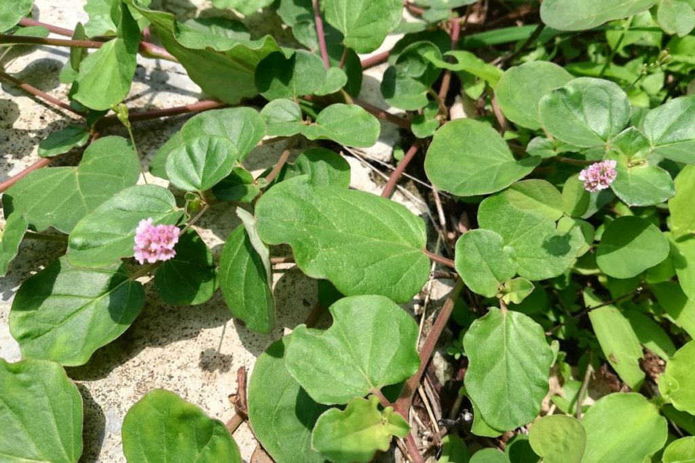

Latthe Education Society's Acharya Deshabhushan Ayurvedic Medical College And Hospital Bedkihal-Shamanewadi, 591214
Department of Dravyaguna Vigyana

Basonym of Drug
Punarnava
Main Synonym
Sothaghni
Swetamoola
Dirghapatrika
Varshketu
Kathillaka
Regional Name
Gujarati: Satodi
Hindi: Vishakhapara, Pathari
Tamil: Sharunai
Telugu: Galizeru
Bengali: Sabuni
Punjabi: Vishakapra
Botanical Name
Boerhavia diffusa
Types
Rakta - Boerhavia diffusa
Sweta - Trianthema portulacastrum L
Family
Nyctaginaceae
External Morphology
A small prostrate herb
Useful Parts
Whole plant
Root
Leaf
Important Phytoconstituent
Beta-sitosterol
Oxalic acid
Boervinoes
Punarnavoside
Hentriacontane
Punarnavine
Rasa Panchak
Rasa: Madhura, Tikta, Kashaya
Guna: Laghu, Ruksha
Virya: Ushna
Vipaka: Katu
Action
Kaphavatahara
Therapeutic Indication
Mutrala (Diuretic)
Rasayana (Rejuvenating)
Hridrogahara (Useful in cardiac diseases)
Sothahara (Anti-inflammatory)
Swasahara (Anti-asthmatic)
Therapeutic Uses
Mutrakriccha:
Decoction of the root is useful in difficult and burning micturition.
Sotha:
Ghee prepared with Punarnava paste and decoction is useful in inflammation.
Anartava:
Decoction of Punarnava is useful in amenorrhea.
Abhishyanda:
Root paste with honey is applied in the eye in conjunctivitis.
Dose
Decoction - 50-100 ml
Root powder - 5-10 gm
Leaves juice - 5-10 ml
Formulations
Punarnavastaka Kwath
Punarnavarista
Punarnavadi Ghrita
Punarnava Rasayana
Adverse Effect
Not Known
Remedial Measure
Not required